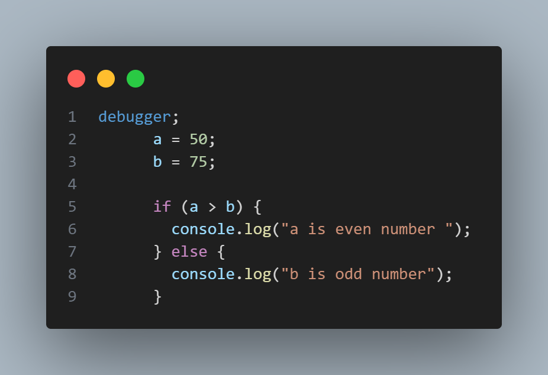
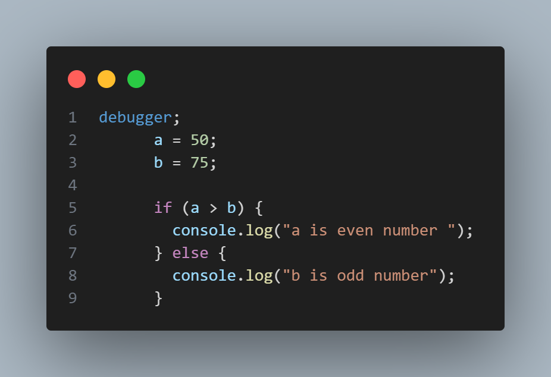

Variables are Containers for Storing Data JavaScript Variables can be declared in 3 ways:
# Using 'var'
#Using 'let'
#Using 'const'
`var` (Function-Scoped , global scoped):-
=>Variables declared with `var` are function-scoped, meaning they are accessible within the function in which they are declared.
=>Variables declared with `var` are also hoisted, which means they are moved to the top of their containing function or global scope during the compilation phase.
=> `var` variables can be re-declared within the same scope.

 
